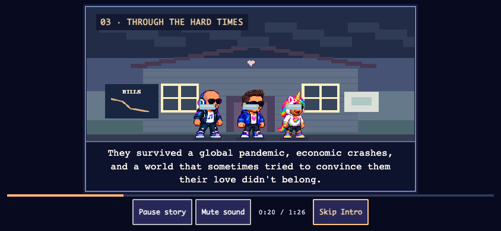
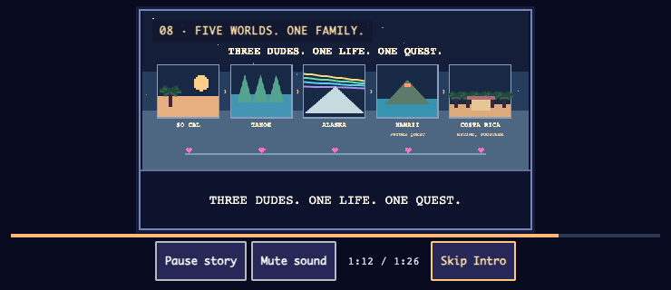
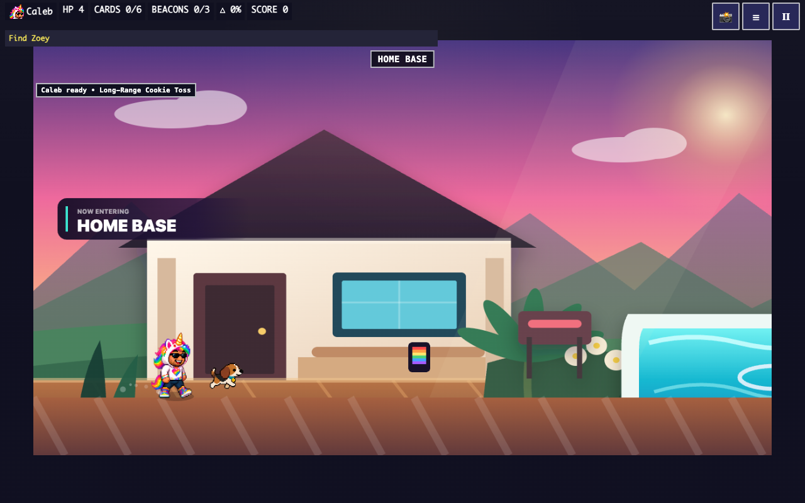

86 seconds · nine scenes · owner review only · production unchanged
Our Story preserves your save and returns to the menu. First-time Start hands directly into SoCal; Skip Intro is always available.
Storyboard, timing and playback contract · Scope, tests and limitations
86-second music-only preview rendered with the shared synth. Press play; no autoplay. This file is generated by the tests and served locally; CI also uploads it with evidence.



NO-GO for deployment until owner approval. Browser emulation is not physical-device verification. No villain artwork or future playable world was integrated.